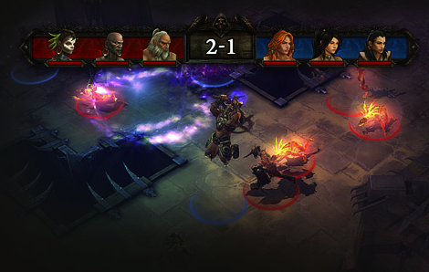

技能符文
在《暗黑破坏神III》中，符文能够让你前所未有的掌控你的技能与力量，变更伤害元素类型、准确值和受影响的敌人数量；新增如缓慢和昏迷的衰弱效果，甚至改变能力的本质和样貌。
追随者
英雄，有时也需要帮助。追随者，具有足够勇气的战士将加入你对抗烈焰地狱的行列，就类似于《暗黑破坏神II》中的佣兵，你可自订他们相关的武器与护甲，但他们能够提升自己的技能与才能，让你能够自己决定他们如何作战或带来什么被动性助益效果。他们也同时以自己的方式建立自己的个性。

制作与工匠
当你在暗黑世界上的旅途中所遇到或帮助的人，部分身为世界上最有才华的制作师将会加入。这些工匠将能够把你在野外找到或拆解出来不要的物品作为更好的用途，制作成为订制的套装护甲或组合宝石来解锁他们的能力。
投入时间与金钱来训练工匠，并将他们的商店补满有品质的材料，他们将能为你提升他们能够制作的物品、强化或合成物品。

流畅互动
想要《暗黑破坏神III》原有的暴风雪般的游戏节奏更加的强烈，我们在《暗黑破坏神III》中做了些〝管理〞上的改变，所以你将会花更多的时间来使用新能力消灭敌人和获得物品。
战斗：更快、更活、更猛
《暗黑破坏神III》仍然保留了前作中以点中咆哮、尖叫的敌人的方式来进行攻击，看着他们死亡 - 但更深入、丰富和简单。各个职业拥有更多防御技能代表着更多的作战策略。药水使用冷却时间确保你能更谨慎的选择自己的敌人，选择你所携带的物品与控制战场一样的重要，生命之球代表着机动性的重要，生死只在一瞬之间。

更好的操作
与《暗黑破坏神II》的热键列不同，《暗黑破坏神III》新增了新的控制选项，就像将技能设置于滑鼠左右键上和透过持续按下按键来切换不同的技能配置。让你在作战中更快速的掌控你的技能。
拍卖场
物品在《暗黑破坏神III》中的地位和在前作中一样的重要，所以我们新增了拍卖场来让玩家们能够以更快更安全的方式来进行买卖交易。物品现在能够直接透过拍卖场来购买或贩售，无需再将物品丢落于地上，也无须再担心陌生玩家是否值得信赖的问题。
职业与技能
我们并没有忽略让《暗黑破坏神》和《暗黑破坏神II》成为经典的游戏元素 - 我们也为玩家所熟悉的职业增加了一些新玩意（我们一定，适当的，小小修改一下）。《暗黑破坏神III》中有五个职业，但其中四个（秘术师、巫醫、狩魔猎人、武僧）是全新的和不同的，而重新登场的野蠻人也同时拥有很多很多新的毁灭性拿手绝活来撕裂敌人们。每个直接都有一个独特的能量系统和不同的游戏体验风格 – 所有英雄不再共享法力。

怪物与物品
《暗黑破坏神III》拥有与《暗黑破坏神I》和《暗黑破坏神II》中更多全新、不同的怪物，而这些怪也拥有很多不同的附加品和能力，有新的，也有玩家所熟悉的。《暗黑破坏神III》的随机物品与前作《暗黑破坏神II》没有太大的改变（虽然我们包含了传奇物品）,但我们却新增了数千个全新的组合，更多独特效果和前所未见的属性。
新武器和装备种类，例如野蠻人的巨型武器和巫醫的咒物，不但完美符合现有武器库的风格同时也为各职业带来了更多专属独特风味。
PVP 竞技场
在以往的暗黑游戏中，与其他玩家对战需要一定的传说历史，因此，在《暗黑破坏神III》中，我们想要为玩家创造一个更正式的游戏空间来让英雄们磨练他们的勇气。《暗黑破坏神III》的竞技场是为 PVP 战斗所独家设计，玩家能够拥有不同等级的排序与生命重生速率，同时也包含了配对系统来确保战斗的平衡性。
全新炼狱难度
《暗黑破坏神III》中的恶梦和地狱难度模式新增了于普通难度中所没有的新级数选项 - 更威猛和惊人的护甲装备、强大的独特物品、高等级的符文和专有配方、工匠的强化升级。怪物在困难等级中变得更加危险。
而在完成地狱难度模式通关后，将开放残忍的炼狱难度中，怪物将高出玩家角色一定程度的级数。炼狱难度将会是对追求游戏最高境界的玩家来说，绝对是个史诗级的挑战，但同时也将有机会获得史诗级的奖励。

成就
你将能够透过 Battle.net 向所有其他玩家炫耀你的战斗等级成就，其将显示你已征服的一切和仍须达成的冒险旅程目标。你应该更加渴望〝最终阶段〞的到来 - 你将能够深入暗黑世界世界中追求更独特的目标。
新史诗故事情节
暗黑破坏神一直以来都保有经典的恐怖、可怕死亡主题 - 善与恶之间的斗争 - 发生于脆弱的人类世界。在 《暗黑破坏神III》中，我们将这经典的故事剧情带往新高（和更有深度），并探索我们在前作所埋下伏笔的暗黑世界。
欢迎，欢迎回来。